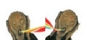

En gulder maar peinzen dat vuilbak niet meer bestond! Niets is minder waar! Na ons enkele jaren terug te trekken in het onderste van de ondergrond en ons toe te spitsen op de organisatie van de geheimste en clandestienste feesten in de diepste krochten tussen Schelde en Leie, tussen de Dender en het Leopoldkanaal. Na onze energie te steken in het uitbrengen van de meest experimentele en ongehoorde muziek, de meest ongeziene cultfilms, de meest intellectualistische publicaties, zijn we verheugd ons weer in meer menselijke oorden te begeven, opnieuw neder te dalen uit onze ivoren toren, en ons toe te wijden aan wat ...
met Fredje Palella - stem Bram Soenen Billiet - stem Leon Vauterin - sax en backing vogels Stijn Danhieux - sax Yosheng Liu - keys Gerrit Walkiers - gitaar, trompet en backing vogels Michel Dheedene - bas Tom Danhieux - drums ft. Emile Van Helleputte - gitaarsolo op Rare maten uit Roskilde Composities: Tom Danhieux Opname en mix: Gerrit Walkiers Opgenomen in november 2022 in brouwerij Hedonis. Hoes: Edward De Maeseneir
Stuntman werd geboren uit een vage tienerdroom. Zoekend naar de juiste toon, stond het collectief op uit zijn corona-winterslaap om het half begonnen en half verzonnen werk te vereeuwigen. Als Benelux-samenraapsel van vergeten beesten, schenkt Stuntman u het muzikale laatste drankje waar u nooit om gevraagd heeft. Gewapend met een knapzak vol middelmatigheid en het sex appeal van een vroegrijpe Jonagold, stuntelen ze zich een weg naar uw muzikale lever met een mix van wazige walsjes, drommelse disco en rhymes waar zelfs Scoopity Woop Kanye zich ongemakkelijk bij voelt.
... onmiskenbaar onze maatschappelijke opgave en lotsbestemming is: de oren van de alledaagse man en vrouw te verfrissen en uit te dagen. Dat doen we dan ook vandaag met STUNTMAN.